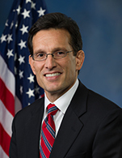
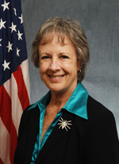
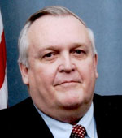
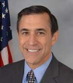
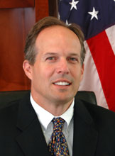
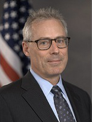

Don McCrory is a Partner at PwC.
Don McCrory is a Partner at PwC.
Rep. Eric Cantor is a results-oriented leader in Congress who is committed to helping solve problems for America's families. He has developed a...
Hon. Anne Castle was confirmed as Assistant Secretary for Water and Science on June 19, 2009. In this capacity, Castle oversees water and science policy for...
Craig Clay is Executive Vice President, Capital Markets and Global Outsourcing, at RR Donnelley.
 Hon. Earl E. Devaney is the President of The Devaney Group, having retired from the Federal government, with over 41 years of service, at the end of 2011...
Bill Franks is Chief Analytics Officer for Teradata, providing insight on trends in the Advanced Analytics space and helping clients understand how Teradata...
Daniel L. Goroff is a Program Director at the Alfred P. Sloan Foundation who is especially interested in economics, finance, mathematics, the scientific and technical work force, and...
Joel Gurin is senior advisor to the Governance Lab at New York University, which studies and promotes the use of data and collaborative technology to improve the...
Jim Harper, as director of information policy studies at the Cato Institute, works to adapt law and policy to the unique problems of the information age, in areas such as...
Hudson Hollister is the founder and executive director of the Data Transparency Coalition. The Coalition is a trade association of technology companies, nonprofits, and...
Jeanne Holm leads collaboration and builds communities as the Evangelist for Data.Gov (an open government flagship project for the...
Alexander B. Howard is a writer and editor based in Washington, DC. For the past three years, he was Washington Correspondent for the O’Reilly Radar at...
Congressman Darrell Issa represents the people of California’s 49th Congressional District in the United States House of Representatives, a seat he has held since 2001...
David A. Lebryk was appointed the first Commissioner of the U.S. Department of the Treasury’s Bureau of the Fiscal Service (Fiscal Service) on October 7, 2012...
Craig M. Lewis is Chief Economist and Director of the Division of Economic and Risk Analysis at the U.S. Securities and Exchange Commission. He is currently on leave from...
Luther Lowe is the Director of Public Policy at Yelp.
Don McCrory is a Partner at PwC.
Gaurav Pal is the Director of Strategic Programs at Smartronix.
 Dr. Theresa Pardo works with a variety of government, corporate, and university partners to lead applied research projects on the policy, management, and...
Dr. Theresa Pardo works with a variety of government, corporate, and university partners to lead applied research projects on the policy, management, and...
Tom Pollak Senior Research Associate and Program Director, National Center for Charitable Statistics, Urban Institute. Tom has worked on an array of...
Linda Powell is the Chief Business Officer of the Office of Financial Research, U.S. Treasury. She was most recently the Chief of the Economic...
Cinthia Schuman is Deputy Director for Philanthropy Programs for The Aspen Institute's Program on Philanthropy and Social Innovation. Previously, Ms. Schuman was Deputy Director of the Rockefeller Family Fund, where she...
Daniel Schuman serves as Policy Director for CREW. He previously worked as Policy Counsel and Director of the Advisory Committee on Transparency for...
Nick Sinai is U.S. Deputy Chief Technology Officer at the White House Office of Science and Technology Policy. In this role, Nick helps lead...
Richard Stirling has been at the heart of Transparency and open data initiatives in the UK since 2008. Within Government, Richard helped shape the current...
Kat Townsend is Special Assistant for Innovation and Engagement, Office of Innovation and...
Ed Walters is CEO of FastCase.
Sen. Mark Warner was elected to the U.S. Senate in November 2008, and serves on the Senate Banking, Budget, Commerce and Intelligence committees. After more than four...
Peter Warren is majority Policy Director for the House Oversight and Government Reform Committee, chaired by Rep. Darrell Issa (R-CA). Warren’s primary...
John Wonderlich is the Policy Director for the Sunlight Foundation and one of the nation's foremost advocates for open government. John spearheads...